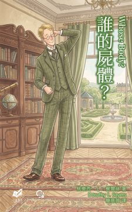

彼得爵爺是一位年輕的世襲貴族，平日在拍賣會上流連忘返，並享受著收集珍本書籍的樂趣。某天接到了母親的來電，提到了一位建築師在家中浴缸裡發現了一具陌生的屍體。好奇心驅使著彼得爵爺親自前往巴特西一探究竟。然而，這具屍體竟然只穿戴一副金邊夾鼻眼鏡，沒有其他身份線索。 在深入調查時，彼得爵爺發現屍體的種種不尋常，尤其是屍體被刮過鬍子，且嘴裡竟殘留著肥皂泡沫的痕跡。這些細節令他百思不得其解，但他卻覺得這案件背後隱藏著某種信號。然而，同時出現的一起金融家神秘失蹤案，讓情勢更加撲朔迷離。當彼得爵爺與助手班特，以及來自蘇格蘭場的友人帕克共同追查這個案件，他們逐漸發現，兩個案件恐怕有所關聯……